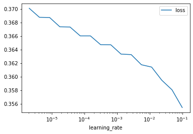

if 'google.colab' in str(get_ipython()):
from google.colab import drive
drive.mount('/content/drive', force_remount=False)
!pip install mirzai
else:Training & validation (CNN)
Various utilities function to train and evaluate the Convolutional Neural Network model
Model
Model (input_dim, in_channel=1, out_channel=16, is_classifier=False, dropout=0.4)
Base class for all neural network modules.
Your models should also subclass this class.
Modules can also contain other Modules, allowing to nest them in a tree structure. You can assign the submodules as regular attributes::
import torch.nn as nn
import torch.nn.functional as F
class Model(nn.Module):
def __init__(self):
super().__init__()
self.conv1 = nn.Conv2d(1, 20, 5)
self.conv2 = nn.Conv2d(20, 20, 5)
def forward(self, x):
x = F.relu(self.conv1(x))
return F.relu(self.conv2(x))Submodules assigned in this way will be registered, and will have their parameters converted too when you call :meth:to, etc.
.. note:: As per the example above, an __init__() call to the parent class must be made before assignment on the child.
:ivar training: Boolean represents whether this module is in training or evaluation mode. :vartype training: bool
weights_init
weights_init (m)
Learner
Learner (model, criterion=MSELoss(), opt=<class 'torch.optim.adam.Adam'>, n_epochs=50, scheduler=None, early_stopper=None, tax_lookup=range(0, 13), verbose=True)
Initialize self. See help(type(self)) for accurate signature.
Learners
Learners (model, tax_lookup, seeds=range(0, 20), device='cpu', verbose=True, split_ratio=0.1)
Initialize self. See help(type(self)) for accurate signature.
How to use the Model, Learner and Learners?
1. Load data
src_dir = 'test'
fnames = ['spectra-features-smp.npy', 'spectra-wavenumbers-smp.npy',
'depth-order-smp.npy', 'target-smp.npy',
'tax-order-lu-smp.pkl', 'spectra-id-smp.npy']
# Or real data
#src_dir = '../_data'
#fnames = ['spectra-features.npy', 'spectra-wavenumbers.npy',
# 'depth-order.npy', 'target.npy',
# 'tax-order-lu.pkl', 'spectra-id.npy']
X, X_names, depth_order, y, tax_lookup, X_id = load_kssl(src_dir, fnames=fnames)
transforms = [select_y, select_tax_order, select_X, log_transform_y]
data = X, y, X_id, depth_order
X, y, X_id, depth_order = compose(*transforms)(data)
print(X.shape)(79, 1764)2. Configure
# Is a GPU available?
use_cuda = torch.cuda.is_available()
device = torch.device('cuda:0' if use_cuda else 'cpu')
print(f'Runtime is: {device}')
params_scheduler = {
'base_lr': 3e-5,
'max_lr': 1e-3,
'step_size_up': 5,
'mode': 'triangular',
'cycle_momentum': False
}
n_epochs = 21
seeds = range(2)Runtime is: cpu3. Train
# Replace following Paths with yours
dest_dir_loss = Path('test/dumps-test/cnn/train_eval/all/losses')
dest_dir_model = Path('test/dumps-test/cnn/train_eval/all/models')
learners = Learners(Model, tax_lookup, seeds=seeds, split_ratio=0.1, device=device)
learners.train((X, y, depth_order[:, -1]),
dest_dir_loss=dest_dir_loss,
dest_dir_model=dest_dir_model,
n_epochs=n_epochs,
sc_kwargs=params_scheduler)--------------------------------------------------------------------------------
Seed: 0
--------------------------------------------------------------------------------
------------------------------
Epoch: 0
Training loss: 0.2095176726579666 | Validation loss: 0.28754910826683044
Validation loss (ends of cycles): [0.28754911]
------------------------------
Epoch: 1
Training loss: 0.20893988013267517 | Validation loss: 0.2862740755081177
Validation loss (ends of cycles): [0.28754911]
------------------------------
Epoch: 2
Training loss: 0.20712845027446747 | Validation loss: 0.28408676385879517
Validation loss (ends of cycles): [0.28754911]
------------------------------
Epoch: 3
Training loss: 0.20162831246852875 | Validation loss: 0.2809036374092102
Validation loss (ends of cycles): [0.28754911]
------------------------------
Epoch: 4
Training loss: 0.1960785835981369 | Validation loss: 0.2767537534236908
Validation loss (ends of cycles): [0.28754911]
------------------------------
Epoch: 5
Training loss: 0.18827631324529648 | Validation loss: 0.27165573835372925
Validation loss (ends of cycles): [0.28754911]
------------------------------
Epoch: 6
Training loss: 0.18386302888393402 | Validation loss: 0.26757434010505676
Validation loss (ends of cycles): [0.28754911]
------------------------------
Epoch: 7
Training loss: 0.17783822119235992 | Validation loss: 0.26450157165527344
Validation loss (ends of cycles): [0.28754911]
------------------------------
Epoch: 8
Training loss: 0.17546673864126205 | Validation loss: 0.26242998242378235
Validation loss (ends of cycles): [0.28754911]
------------------------------
Epoch: 9
Training loss: 0.17405737936496735 | Validation loss: 0.26132825016975403
Validation loss (ends of cycles): [0.28754911]
------------------------------
Epoch: 10
Training loss: 0.1731555312871933 | Validation loss: 0.2611456513404846
Validation loss (ends of cycles): [0.28754911 0.26114565]
------------------------------
Epoch: 11
Training loss: 0.171500563621521 | Validation loss: 0.26005008816719055
Validation loss (ends of cycles): [0.28754911 0.26114565]
------------------------------
Epoch: 12
Training loss: 0.17028532177209854 | Validation loss: 0.2580767273902893
Validation loss (ends of cycles): [0.28754911 0.26114565]
------------------------------
Epoch: 13
Training loss: 0.16719596087932587 | Validation loss: 0.2550870180130005
Validation loss (ends of cycles): [0.28754911 0.26114565]
------------------------------
Epoch: 14
Training loss: 0.16363266110420227 | Validation loss: 0.25126326084136963
Validation loss (ends of cycles): [0.28754911 0.26114565]
------------------------------
Epoch: 15
Training loss: 0.15928955376148224 | Validation loss: 0.24669373035430908
Validation loss (ends of cycles): [0.28754911 0.26114565]
------------------------------
Epoch: 16
Training loss: 0.1538691222667694 | Validation loss: 0.24314354360103607
Validation loss (ends of cycles): [0.28754911 0.26114565]
------------------------------
Epoch: 17
Training loss: 0.1488434001803398 | Validation loss: 0.24059247970581055
Validation loss (ends of cycles): [0.28754911 0.26114565]
------------------------------
Epoch: 18
Training loss: 0.14692240208387375 | Validation loss: 0.2389926314353943
Validation loss (ends of cycles): [0.28754911 0.26114565]
------------------------------
Epoch: 19
Training loss: 0.14454391598701477 | Validation loss: 0.238305926322937
Validation loss (ends of cycles): [0.28754911 0.26114565]
------------------------------
Epoch: 20
Training loss: 0.14511099457740784 | Validation loss: 0.23853451013565063
Validation loss (ends of cycles): [0.28754911 0.26114565 0.23853451]
--------------------------------------------------------------------------------
Seed: 1
--------------------------------------------------------------------------------
------------------------------
Epoch: 0
Training loss: 0.25518064200878143 | Validation loss: 0.20745772123336792
Validation loss (ends of cycles): [0.20745772]
------------------------------
Epoch: 1
Training loss: 0.2529909759759903 | Validation loss: 0.20660457015037537
Validation loss (ends of cycles): [0.20745772]
------------------------------
Epoch: 2
Training loss: 0.25137291848659515 | Validation loss: 0.20521025359630585
Validation loss (ends of cycles): [0.20745772]
------------------------------
Epoch: 3
Training loss: 0.2424357831478119 | Validation loss: 0.20297007262706757
Validation loss (ends of cycles): [0.20745772]
------------------------------
Epoch: 4
Training loss: 0.23724160343408585 | Validation loss: 0.2000746876001358
Validation loss (ends of cycles): [0.20745772]
------------------------------
Epoch: 5
Training loss: 0.22914429008960724 | Validation loss: 0.19651295244693756
Validation loss (ends of cycles): [0.20745772]
------------------------------
Epoch: 6
Training loss: 0.22360220551490784 | Validation loss: 0.1936747431755066
Validation loss (ends of cycles): [0.20745772]
------------------------------
Epoch: 7
Training loss: 0.21922896057367325 | Validation loss: 0.19150234758853912
Validation loss (ends of cycles): [0.20745772]
------------------------------
Epoch: 8
Training loss: 0.2143341824412346 | Validation loss: 0.19003605842590332
Validation loss (ends of cycles): [0.20745772]
------------------------------
Epoch: 9
Training loss: 0.2121415138244629 | Validation loss: 0.18925482034683228
Validation loss (ends of cycles): [0.20745772]
------------------------------
Epoch: 10
Training loss: 0.2118835374712944 | Validation loss: 0.18918269872665405
Validation loss (ends of cycles): [0.20745772 0.1891827 ]
------------------------------
Epoch: 11
Training loss: 0.21091558784246445 | Validation loss: 0.18842312693595886
Validation loss (ends of cycles): [0.20745772 0.1891827 ]
------------------------------
Epoch: 12
Training loss: 0.2112690731883049 | Validation loss: 0.1870431900024414
Validation loss (ends of cycles): [0.20745772 0.1891827 ]
------------------------------
Epoch: 13
Training loss: 0.20744766294956207 | Validation loss: 0.1849963366985321
Validation loss (ends of cycles): [0.20745772 0.1891827 ]
------------------------------
Epoch: 14
Training loss: 0.20407014340162277 | Validation loss: 0.18240754306316376
Validation loss (ends of cycles): [0.20745772 0.1891827 ]
------------------------------
Epoch: 15
Training loss: 0.19959653913974762 | Validation loss: 0.1791967898607254
Validation loss (ends of cycles): [0.20745772 0.1891827 ]
------------------------------
Epoch: 16
Training loss: 0.19397148489952087 | Validation loss: 0.17683245241641998
Validation loss (ends of cycles): [0.20745772 0.1891827 ]
------------------------------
Epoch: 17
Training loss: 0.1890103444457054 | Validation loss: 0.17504656314849854
Validation loss (ends of cycles): [0.20745772 0.1891827 ]
------------------------------
Epoch: 18
Training loss: 0.18793968856334686 | Validation loss: 0.1737639605998993
Validation loss (ends of cycles): [0.20745772 0.1891827 ]
------------------------------
Epoch: 19
Training loss: 0.18513494729995728 | Validation loss: 0.17320512235164642
Validation loss (ends of cycles): [0.20745772 0.1891827 ]
------------------------------
Epoch: 20
Training loss: 0.18279500305652618 | Validation loss: 0.17318619787693024
Validation loss (ends of cycles): [0.20745772 0.1891827 0.1731862 ]4. Evaluate
# Replace following Paths with yours
src_dir_model = Path('test/dumps-test/cnn/train_eval/all/models')
learners = Learners(Model, tax_lookup, seeds=seeds, device=device)
perfs_global_all, y_hats_all, y_trues_all, ns_all = learners.evaluate((X, y, depth_order[:, -1]),
src_dir_model=src_dir_model)learners.evaluate((X, y, depth_order[:, -1]), src_dir_model=src_dir_model)(Empty DataFrame
Columns: []
Index: [],
Empty DataFrame
Columns: []
Index: [],
Empty DataFrame
Columns: []
Index: [],
Empty DataFrame
Columns: []
Index: [])5. Learning rate finder
split_ratio = 0.1
# Train/test split
X_train, X_test, y_train, y_test, tax_order_train, tax_order_test = train_test_split(X,
y,
depth_order[:,1],
test_size=split_ratio,
random_state=42)
# Further train/valid split
X_train, X_valid, y_train, y_valid, tax_order_train, tax_order_valid = train_test_split(X_train,
y_train,
tax_order_train,
test_size=split_ratio,
random_state=42)
dls = DataLoaders((X_train, y_train, tax_order_train),
(X_valid, y_valid, tax_order_valid),
(X_test, y_test, tax_order_test),
transform=SNV_transform())
training_generator, validation_generator, test_generator = dls.loaders()n_epochs = 2
step_size_up = 5
criterion = MSELoss() # Mean Squared Error loss
base_lr, max_lr = 3e-5, 1e-3 # Based on learning rate finder## LR finder
model = Model(X.shape[1], out_channel=16).to(device)
opt = Adam(model.parameters(), lr=1e-4)
model = model.apply(weights_init)
scheduler = CyclicLR(opt, base_lr=base_lr, max_lr=max_lr,
step_size_up=step_size_up, mode='triangular',
cycle_momentum=False)
learner = Learner(model, criterion, opt, n_epochs=n_epochs,
scheduler=scheduler, early_stopper=None,
tax_lookup=tax_lookup.values(), verbose=True)
lrs, losses = learner.lr_finder(training_generator, end=0.1, n_epochs=8)Epoch: 0
Epoch: 1
Epoch: 2
Epoch: 3
Epoch: 4
Epoch: 5
Epoch: 6
Epoch: 7pd.DataFrame({'learning_rate': lrs, 'loss': losses}).plot(x='learning_rate', y='loss', logx=True);